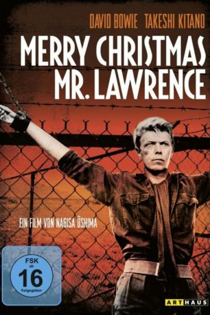
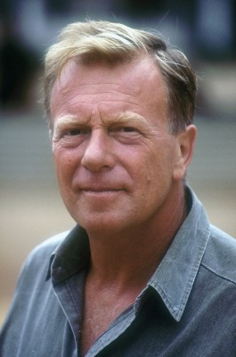
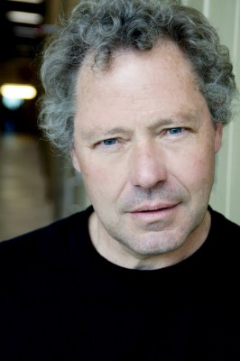

#5237 Furyo - Merry Christmas, Mr. Lawrence
Alternativ: Merry Christmas Mr. Lawrence
Auszeichnungen: 2 BAFTA-Awards gewonnen
 
 IMDB-Wertung: 7.3 / 10
IMDB-Wertung: 7.3 / 10  Metascore: 0
Metascore: 0 
Die Handlung ist 1942 in einem japanischen Gefangenenlager auf Java angesiedelt, in dem vor allem britische Soldaten untergebracht sind. Die Japaner blicken mit Verachtung auf die alliierten Soldaten herab, welche die Gefangenschaft ertragen, anstatt Selbstmord zu begehen, wie es die Japaner in ihrer Auffassung von Ehre für richtig halten. Das Lager wird von Hauptmann Yonoi geleitet, der eine strenge Disziplin walten lässt. Leutnant Lawrence, mit Sprache und Denken der Japaner vertraut, versucht zwischen den Kulturen zu vermitteln und verbringt viel Zeit mit dem Aufseher Hara, manchmal auch mit Yonoi. Als dieser nach Batavia beordert wird, um an der Verhandlung gegen den Briten Celliers mitzuwirken, entwickelt er eine starke Faszination für den stoischen, selbstbewussten Angeklagten. Celliers ist mit dem Fallschirm abgesprungen, hat mit wenigen Kameraden einen japanischen Konvoi angegriffen und wird beschuldigt, einheimische Guerilla-Kämpfer anzuführen.
Jahr: 1983
Dauer: 123 Minuten
FSK: 16
Land: England Studio: EuroVideoTonspuren:
Untertitel: Englisch, Deutsch,
Auflösung: 1080p (1920x1080) Größe: 9123 MB
Genre: Drama, Krieg, Weihnachten
Regisseur: Nagisa Ôshima
Drehbuch: Thomas Lennon
Soundtrack:
Darsteller:
 David Bowie als Maj. Jack 'Strafer' Celliers
David Bowie als Maj. Jack 'Strafer' Celliers Tom Conti als Col. John Lawrence
Tom Conti als Col. John Lawrence- Ryuichi Sakamoto als Capt. Yonoi
 Takeshi Kitano als Sgt. Gengo Hara
Takeshi Kitano als Sgt. Gengo Hara-  Jack Thompson als Group Capt. Hicksley
-  Alistair Browning als De Jong
- Johnny Ohkura als Kanemoto
- James Malcolm als Celliers' Brother
- Chris Broun als Celliers aged 12
- Yûya Uchida als Commandant of Military Prison
- Ryûnosuke Kaneda als President of the Court
- Takashi Naitô als Lt. Iwata
- Tamio Ishikura als Prosecutor
- Rokkô Toura als Interpreter
- Kan Mikami als Lt. Ito
- Yûji Honma als Pfc. Yajima
- Daisuke Iijima als Cpl. Ueki
- Hideo Murota als New Camp Commandant
- Barry Dorking als Chief Doctor
- Geoff Clendon als Australian Doctor
- Grant Bridger als P.O.W. Officer
- Richard Adams als P.O.W
- Geoff Allen als P.O.W
- Michael Baxter-Lax als P.O.W.
- Mark Berg als P.O.W
- Marcus Campbell als P.O.W
- Colin Francis als P.O.W
- Richard Hensby als P.O.W
- Richard Hoare als P.O.W
- Martin Ibbertson als P.O.W
- Rob Jayne als P.O.W
- Richard Mills als P.O.W
- Mark Penrose als P.O.W
- Arthur Ranford als P.O.W
- Steve Smith als P.O.W
- Stephen Taylor als P.O.W
- Richard Zimmerman als P.O.W
- Ian Miller als English Guard
- Don Stevens als Pastor
- Yôichi Iijima als Japanese Soldier
- Satoshi Ito als Japanese Soldier
- Masaki Kusakabe als Japanese Soldier
- Kunihide Kuruma als Japanese Soldier
- Hiroshi Mikami als Japanese Soldier
- Akihiro Masuda als Japanese Soldier
- Tokuhisa Masuda als Japanese Soldier
- Takeshi Nagasawa als Japanese Soldier
- Takashi Odashima als Japanese Soldier
- Masanori Okada als Japanese Soldier
- Shoetsu Sato als Japanese Soldier
Datei: X:\1983\Furyo - Merry Christmas, Mr. Lawrence (1983, FSK16, 1920x1080).mkv seit 03.01.2017
Festplatte: HD 1980-1986
 Es gibt insgesamt 35 Filme in der Gruppe '1983'
Es gibt insgesamt 35 Filme in der Gruppe '1983'